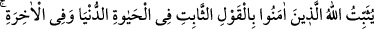
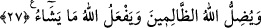

el-Kevâşî’de ise şöyle der: “Derler ki: Îman, ağaca benzetildi. Çünkü bir ağacın
mutlaka sâbit bir kökü, bunun üzerine kaim bulunan dalları ve yüksekte bir tepesi
bulunur. İşte îmân da böyledir. İman için de mutlaka kalb ile tasdik, dil ile ifâde ve
beden ile amel bulunması zarûrîdir.”
Ebu’l-Leys de şöyle der: “Ârif bir müminin kalbindeki ma‘rifet sâbittir. Hatta yere
iyice kök salmış bir ağaçtan bile daha sâbittir. Çünkü bu ağaç kesilebilir, ama ârifin
kalbindeki ma‘rifeti oraya koyandan başka hiç kimse söküp atamaz.
27. Allah îmân edenleri dünyâ hayâtında da âhirette de sağlam sözle tesbit eder.
Allah zalimleri saptırır ve Allah dilediğini yapar.
“Allah îmân edenleri dünyâ hayâtında da” yâni ölümden önce de “âhirette de” yâni
gerek âhiret âlemine dâhil olan ve âhiret menzillerinin ilki olan kabirde Münker-Nekir
suâl sorduğunda gerekse öteki uhrevî merhalelerde “sağlam sözle” yâni kelime-i tevhîd
ile “tesbit eder.” Çünkü kelime-i tevhîd mü’minin kalbinde iyice yer etmiş haldedir.
Nitekim Kâşifî şöyle der:
“Sağlam söz” Lâ ilâhe illallah Muhammedü’r-rasûlullah sözüdür ki Hak Teâlâ
mü’minleri onun üzerinde sâbit kılar.”
Allah îmân edenleri dünyâ hayâtında sağlam sözle tesbit eder. Onlar bir belâya
mübtelâ kılındıkları zaman türlü türlü işkencelere tâbi tutulsalar bile sebat edip
dinlerinden dönmezler. Tıpkı Zekeriyya, Yahya, Cercis, Şem’un ile Ashab-ı Uhdûd
(hendek sâhipleri) tarafından öldürülen, vücutları demir taraklarla taranan mü’minler
gibi bazı peygamberler ve salih zâtlar gibi.
Müftî Sa‘dî şöyle der: “Rivâyete göre Cercîs havârîlerdendi. Allah ona ölüleri
diriltebileceği ismi öğretmişti. Musul’da da putperest bir zorba vardı. Cercis bu zorbayı
sâdece Allah’a kulluk etmeye davet etti. Zorba adamlarına Cercis’i yakalamalarını
emretti. Adamlar Cercis’in el ve ayaklarını bağladılar.
Zorba demir tarakların getirilmesini emretti. Göğsü ve kolları tarandı, sonra da
üzerine tuzlu su döküldü. Fakat Allah onu sabrettirdi.
Bu sefer çivi getirtip gözlerini ve kulaklarını çiviletti. Allah Cercis’e yine sabır
verdi. Zorba bakır dolu bir kazan hazırlatıp altının tutuşturulmasını emretti. Bakır eriyip
kazan bembeyaz kesilene kadar altını yaktılar. Sonra Cercis’i içine attılar. Ancak Allah
onun serin ve esenlik olmasını sağladı. Hatta Cercis’i lîme lîme kestikleri halde Allah
Teâlâ ona tekrar can verdi. O da zorbayı ve kavmini Allah’a dâvet etti.
Ne var ki bu zorba hükümdarın yine îmân etmemesi üzerine Allah altını üstüne